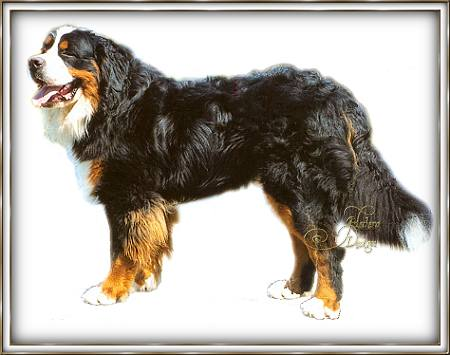

|
Ga met je muis over het plaatje en
waar je een handje ziet
krijgt ook de uitleg in een klein venstertje.
Het is niet nodig om te klikken.

De
rasstandaard:
Raspunten van de Berner
Sennenhond, zodals deze werden vastgesteld door de Schweizerischen Klub
für Berner Sennenhunde en aanvaard door de Federation Cynologique
Internationale (F.C.I.), het internationale overkoepelende orgaan.
Algemeen
voorkomen:
Meer dan middelgrote, krachtige, beweeglijke gebruikshond, harmonisch en
fraai gelijkmatig gebouwd, met stevige, rechte ledematen.
Karakter:
Stabiel, niet erg scherp, onbevreesd, schotvast. Middelmatig van
temperament.
Hoofd:
Krachtig, met vlakke schedel en weinig ontwikkelde voorhoofdsgroef, goed
geprononceerde, niet te sterke stoop.
Krachtige rechte voorsnuit, oren middelgroot, hoogaangezet, driehoekig,
in rust vlak aanliggend, ogen donkerbruin, amandelvormig, aansluitende
oogleden, lippen niet overontwikkeld.
Gebit:
Volledig schaargebit
Afwijkingen:
1. Bij honden, die vanwege hun uiterlijk en karakter een 'uitmuntend'
behaalden, worden verschoven snijtanden en een tanggebit getolereerd.
2. Het ontbreken van één premolaar mag niet met 'uitmuntend'
gewaardeerd worden.
3. Het ontbreken van meer promolaren of molaren, evenals voor- en
onderbeet, zijn fouten die voor de fok uitsluiten; met uitzondering van
het ontbreken van tweemaal P1.
Hals:
Krachtig, gespierd en middellang.
Lichaam:
Eerder gedrongen dan lang. Verhouding tussen schofhoogte en
lichaamslengte ca. 9:10. Tot minstens op ellebooghoogte reikende
brede borst met duidelijke voorborst, krachtige lendenen, ribbekast en
rond-ovale doorsnee.
Rug vas en licht afgeronde, korte croupe.
Voorhand:
Schouderbladen lang, krachtig en schuingeplaatst, met de bovenarm een
stompe hoek vormend, vlak aanliggend en goed bespierd. Stand van
alle kanten bezien, recht. Polsen nauwelijks doorzakkend.
Evenwijdige stand.
Achterhand:
Achterbenen breed, krachtig en goed bespierd. Dijbeen tamelijk
lang en van opzij bezien schuin ten opzichte van het onderbeen
staand. Spronggewricht goed gehoekt, breed en krachtig.
Stand recht, noch naar binnen noch naar buiten uitdraaiend.
Voeten:
Kort, rond en gesloten.
Staart:
Zwaar behaard, tot op het spronggewricht reikend, echter niet tot op de
grond, licht zwevend gedragen.
Beweging:
Stuwend gangwerk vóór en een goede aansluiting van de achterbenen,
ruime gelijkmatige bewegingsontwikkeling in alle gangen.
Vacht:
Lang, glad of licht gegolfd.
Kleur:
Diepzwarte grondkleur met donkere, bruin-rode brand aan de wangen, boven
de ogen, aan alle vier de benen en aan de borst. Witte, lichte tot
middelgrote symmetrische aftekening aan het hoofd (bles) en witte
borstaftekening (kruis). Zeer graag gezien, maar geen voorwaarde:
witte voeten, ten hoogste tot aan de polsen reikend en witte
staartpunt. Een kleine witte nekvlek en een witte achtervlek zijn
ongewenst; worden echter wel getolereerd.
Grootte:
Reuen: 64-70 cm. Ideale schofthoogte 66-68 cm
Teven: 58-66 cm. Ideaale schofthoogte 60-63 cm
Fouten
die voor de fok uitsluiten:
- spleetneus, blauwe ogen, boven- en onderbijters
- niet typische totaalverschijning
- sterk ontwikkeld stokhaar, kort haar en sterk kroeshaar
- naar binnen krullen van het ooglid (entropion), naar buiten krullen
van het ooglid (ectropion)
- witte benen (witte laarzen), witte halsring, miskleuren
- heupdysplasie in de 2e, 3e en 4e graad
- angst
- ontbreken van beide teelballen (cryptorchidie) en ontbreken van één
teelbal (monorchidie)
Uit:
"De Berner Sennenhond" van Ruud Haak ISBN 90-6248-691-6
|